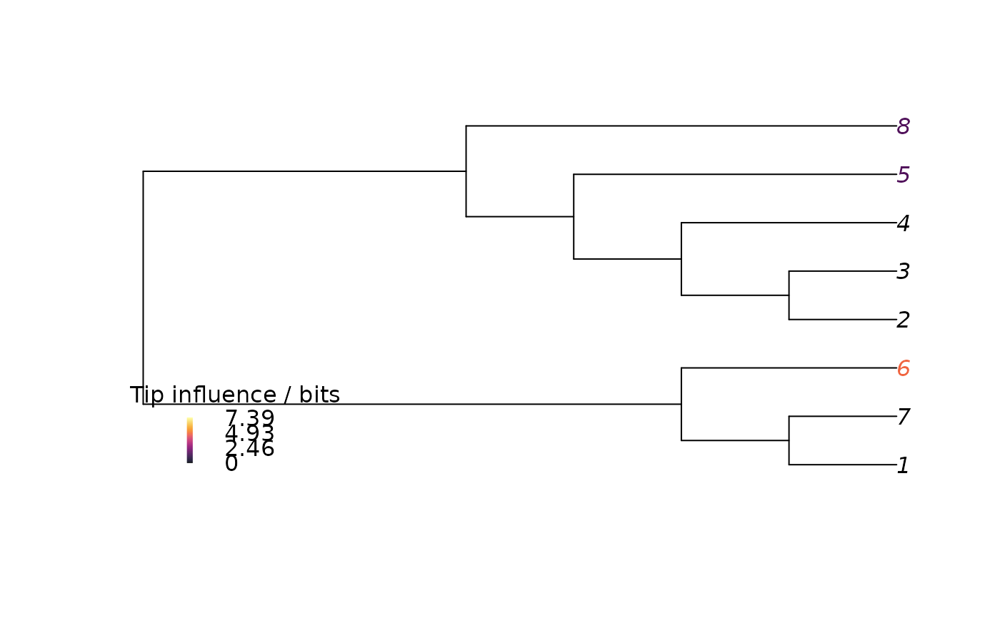

TaxonInfluence() ranks taxa according to their influence on the most
parsimonious topology.
TaxonInfluence(
dataset,
tree = NULL,
Distance = ClusteringInfoDistance,
calcWeighted = TRUE,
savePath = NULL,
useCache = FALSE,
verbosity = 3L,
...
)A phylogenetic data matrix of phangorn class
phyDat, whose names correspond to the labels of any accompanying tree.
Optimal tree or summary tree (of class "phylo") or list of trees
(of class "list" or "multiPhylo") against which results should be evaluated.
If NULL, an optimal tree will be sought using parsimony search with
the parameters provided in ....
Function to calculate tree distance; default:
ClusteringInfoDistance().
Logical specifying whether to compute the distance-weighted mean value.
Character giving prefix of path to which reduced trees will be
saved (with write.nexus()). File names will follow the pattern
paste0(savePath, droppedTaxonName, ".nex"); savePath should thus contain
a trailing / if writing to a directory, which will be created if it does
not exist. Special characters will be removed from leaf labels when
creating the file path (using path_sanitize()).
If NULL, computed trees will not be saved.
Logical vector; if TRUE, previous tree search results will
be loaded from the location given by savePath, instead of running a fresh
search with the specified dataset and parameters.
Parameters for MaximizeParsimony().
Tree search will be conducted using tree as a starting tree.
TaxonInfluence() returns a matrix listing the phylogenetic
influence of each taxon, measured in the units of the chosen tree distance
metric (default = bits).
Columns denote taxa; rows denote the maximum, distance-weighted mean,
and minimum distance between optimal tree sets.
TaxonInfluence() follows the approach of
Mariadassou et al. (2012)
in repeating tree search
whilst leaving each taxon in turn out of the analysis, and measuring
the distance of reconstructed trees from the optimal tree obtained when
all taxa are included in phylogenetic inference.
As Denton and Goolsby (2018) emphasize, the Robinson–Foulds distance is unsuitable for this purpose; this function allows the user to specify a preferred tree distance measure, defaulting to the clustering information distance (Smith 2020) . Because optimal parsimony trees are not equiprobable, taxon influence is ranked based on the maximum and minimum tree-to-tree distances between optimal trees.
Sets of equally parsimonious trees are not statistical samples of tree space, but are biased towards areas of uncertainty. It is possible that a set of trees contains all possible resolutions of a particular clade, and a single other topology in which that clade does not exist – essentially two distinct solutions, one (a) which could be summarised with a summary tree that contains a polytomy, and another (b) which could be summarized by a perfectly resolved tree. Neither of these scenarios is preferable under the principles of parsimony; but summary statistics (e.g. mean, median) will be strongly influenced by the many trees in group a, thus underplaying the existence of solution b.
TaxonInfluence() uses an ad hoc method to produce summary statistics
after weighting for trees' distance from other trees. Trees that have few
close neighbours contribute more to the weighted mean, thus reducing the
influence of many trees that differ only in small details.
This distance-weighted mean is thus less prone to bias than a simple mean
– it is no more statistically valid, but (potentially) provides a more
representative summary of comparisons between sets of trees.
Denton JS, Goolsby EW (2018).
“Measuring Inferential Importance of Taxa Using Taxon Influence Indices.”
Ecology and Evolution, 8(9), 4484--4494.
doi:10.1002/ece3.3941
.
Mariadassou M, Bar-Hen A, Kishino H (2012).
“Taxon Influence Index: Assessing Taxon-Induced Incongruities in Phylogenetic Inference.”
Systematic Biology, 61(2), 337--345.
doi:10.1093/sysbio/syr129
.
Smith MR (2020).
“Information Theoretic Generalized Robinson-Foulds Metrics for Comparing Phylogenetic Trees.”
Bioinformatics, 36(20), 5007--5013.
doi:10.1093/bioinformatics/btaa614
.
Other tree scoring:
CharacterLength(),
IWScore(),
LengthAdded(),
MinimumLength(),
MorphyTreeLength()
#' # Load data for analysis in R
library("TreeTools")
data("congreveLamsdellMatrices", package = "TreeSearch")
# Small dataset for demonstration purposes
dataset <- congreveLamsdellMatrices[[42]][1:8, ]
bestTree <- MaximizeParsimony(dataset, verbosity = 0)[[1]]
# Calculate tip influence
influence <- TaxonInfluence(dataset, ratchIt = 0, startIt = 0, verbos = 0)
#>
#> ── BEGIN TREE SEARCH (k = Inf) ─────────────────────────────────────────────────
#> → Initial score: 86
#>
#> ── Sample local optimum ────────────────────────────────────────────────────────
#> → TBR depth 2; keeping 14.4 trees; k = Inf
#> ℹ 2024-04-02 10:59:41: Score: 86
#> ✔ 2024-04-02 10:59:41: Tree search terminated with score 82
# Colour tip labels according to their influence
upperBound <- 2 * TreeDist::ClusteringEntropy(
PectinateTree(NTip(dataset) - 1))
nBin <- 128
bin <- cut(
influence["max", ],
breaks = seq(0, upperBound, length.out = nBin),
include.lowest = TRUE
)
palette <- hcl.colors(nBin, "inferno")
plot(bestTree, tip.color = palette[bin])
PlotTools::SpectrumLegend(
"bottomleft",
palette = palette,
title = "Tip influence / bits",
legend = signif(seq(upperBound, 0, length.out = 4), 3),
bty = "n"
)
